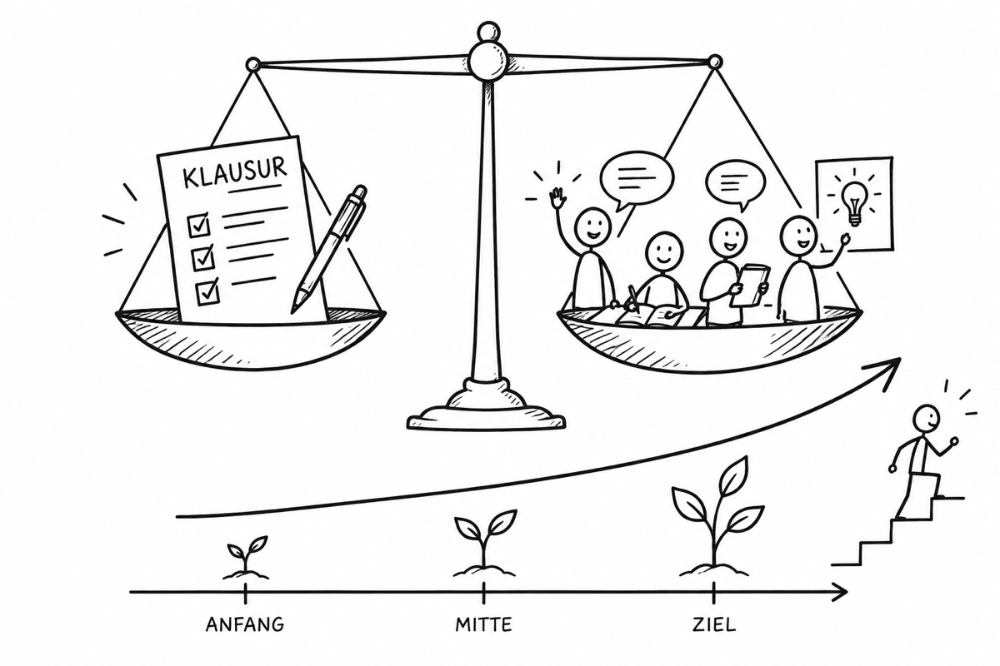

Gleichwertig berücksichtigen, Entwicklung einbeziehen.

In Oberstufenkursen mit Klausuren entsteht die Kursabschlussnote aus den Endnoten der Bereiche Klausuren und Sonstige Mitarbeit. Beide Bereiche sind gleichwertig. § 13 Abs. 1 APO-GOSt untersagt eine rein rechnerische Notenbildung und verlangt, die Gesamtentwicklung im Kurshalbjahr einzubeziehen.
Beispiel: Klausuren 1, Sonstige Mitarbeit 3. Daraus folgt keine automatische 2. Die Lehrkraft begründet eine Gesamtnote anhand der Leistungsnachweise und Entwicklung. Die Folienaussage „jede Note zwischen 1− und 3+“ ist keine freie Wahl ohne fachliche Begründung.
Ohne Klausuren ist die Endnote der Sonstigen Mitarbeit zugleich die Kursabschlussnote.